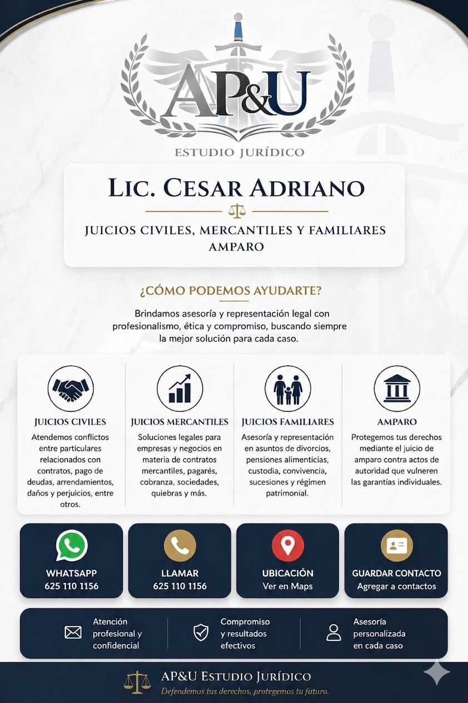

Brindamos asesoría y representación legal con profesionalismo, ética y compromiso, buscando siempre la mejor solución para cada caso.
Atendemos conflictos entre particulares relacionados con contratos, pago de deudas y arrendamientos.
Soluciones legales para empresas en materia de contratos, pagarés, cobranza y sociedades.
Asesoría en asuntos de divorcios, pensiones alimenticias, custodia y sucesiones.
Protegemos tus derechos mediante el juicio de amparo contra actos de autoridad.